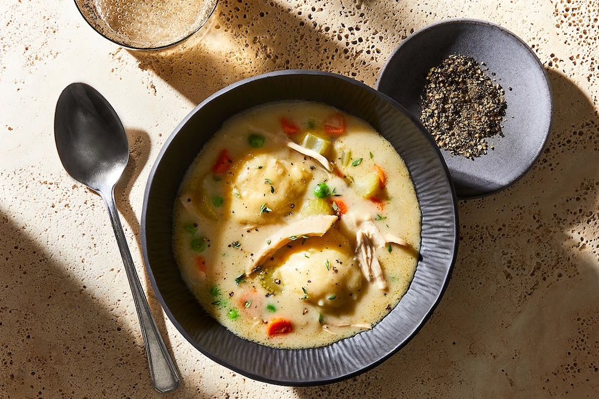

Chicken & Dumplings, Just Like Mom's
Ingredients:
- 4 whole chicken legs (thighs and drumsticks), about 4 pounds total
- 4 carrots, 1 whole, 3 chopped into ½-inch rounds
- 4 celery stalks, 1 whole, 3 chopped into ½-inch pieces
- 1 medium yellow onion, chopped, divided
- 4 garlic cloves, smashed
- 5 sprigs fresh thyme
- 1 sprig fresh rosemary
- Parsley stems from ½ bunch (reserve the leaves for another use)
- 2 dried bay leaves
- 2 teaspoons whole black peppercorns
- Kosher salt
- 8 tablespoons unsalted butter, melted, divided
- Freshly ground black pepper
- 1 1/2 cups all-purpose flour, divided
- 2 teaspoons baking powder
- 1/4 teaspoon baking soda
- 1/2 cup plus 2 tablespoons buttermilk
- 1/2 cup heavy cream
- 1/2 cup frozen peas, thawed
Directions:
- In a large, wide pot (like a stockpot or a Dutch oven), bring the chicken, whole carrot, whole celery stalk, half of the onion, the garlic, thyme, rosemary, parsley stems, bay leaves, peppercorns, and 3 quarts water to a simmer. Cook, uncovered, for 40 to 50 minutes, until the chicken is cooked through. Transfer the chicken to a plate and let sit until cool enough to handle. Shred the meat from thighs and legs, discarding the skin, bones, and excess fat. Cover the meat with foil to keep warm; set aside.
- Strain the stock through a fine-mesh sieve into a large bowl; discard the solids. Wipe out the pot, pour the stock back in, and bring to a simmer. Stir in 1 tablespoon plus 1 teaspoon of the salt.
- In a large skillet over medium-heat, heat ⅓ cup (5 tablespoons) of the butter. Cook the chopped carrot, chopped celery, and the remaining onion, stirring occasionally, for 8 to 10 minutes, until the vegetables are softened but not completely tender; season with salt and pepper. Add ½ cup of the flour and cook, stirring, for about 1 minute, until the vegetables are coated. Scrape the vegetable mixture into the simmering stock and whisk until liquid is thickened and no lumps remain, then continue to cook for 10 to 15 minutes, until the vegetables are tender.
- Meanwhile, in a medium bowl, whisk the baking powder, baking soda, 1 teaspoon salt, ¼ teaspoon pepper, and the remaining 1 cup of the flour. In a small bowl, whisk the buttermilk and remaining 3 tablespoons of the butter. Fold the buttermilk mixture into the dry ingredients just until the dough comes together (be careful not to overmix or the dumplings will be tough).
- Add the cream and reserved chicken to the stew and return to a simmer. Drop tablespoon-sized portions of the dough into the stew (don’t worry if they aren’t perfect, they will puff up as they cook). Reduce the heat to low, cover, and cook for 10 minutes. Remove from the heat and sprinkle the peas over the top; cover and let sit for 5 minutes.
- Divide chicken stew and dumplings among bowls and serve.